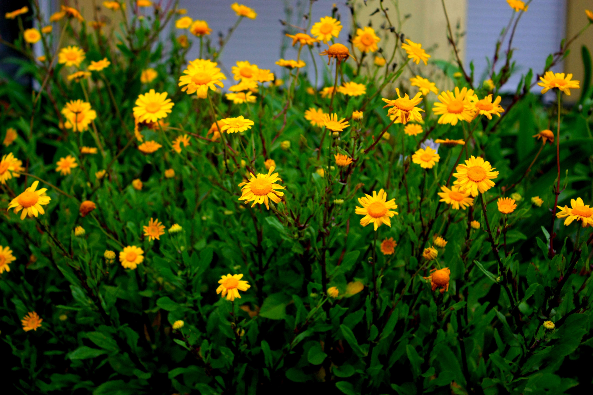
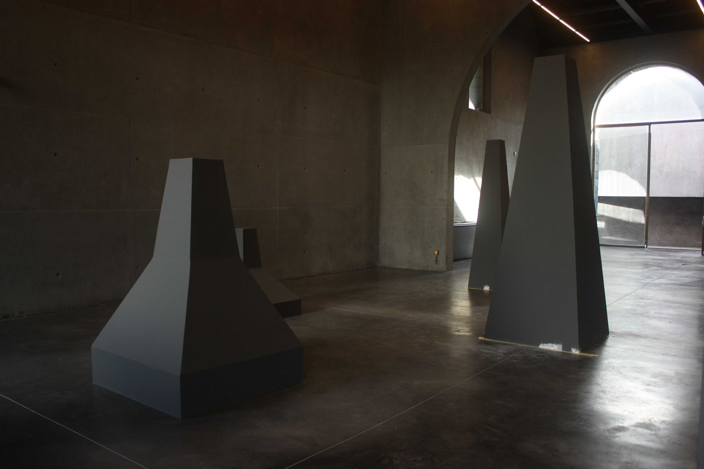
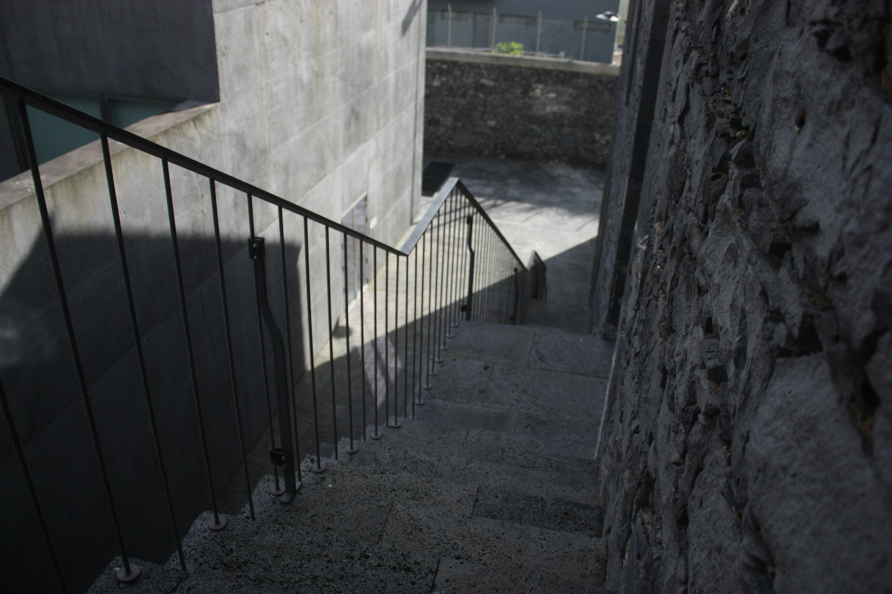
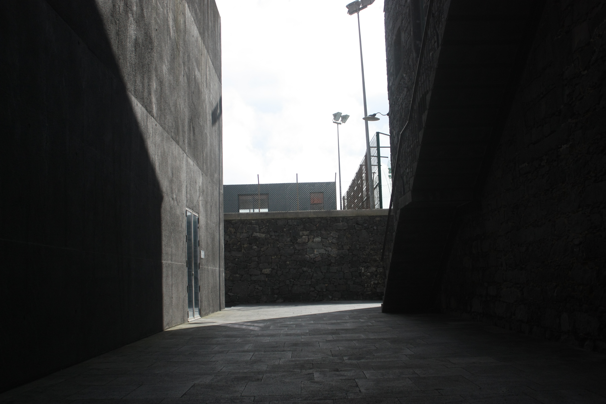
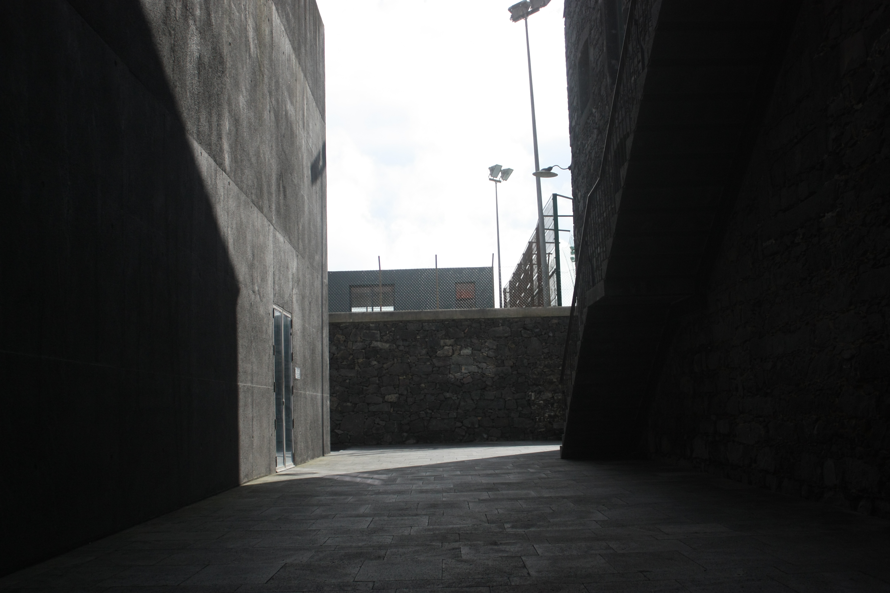
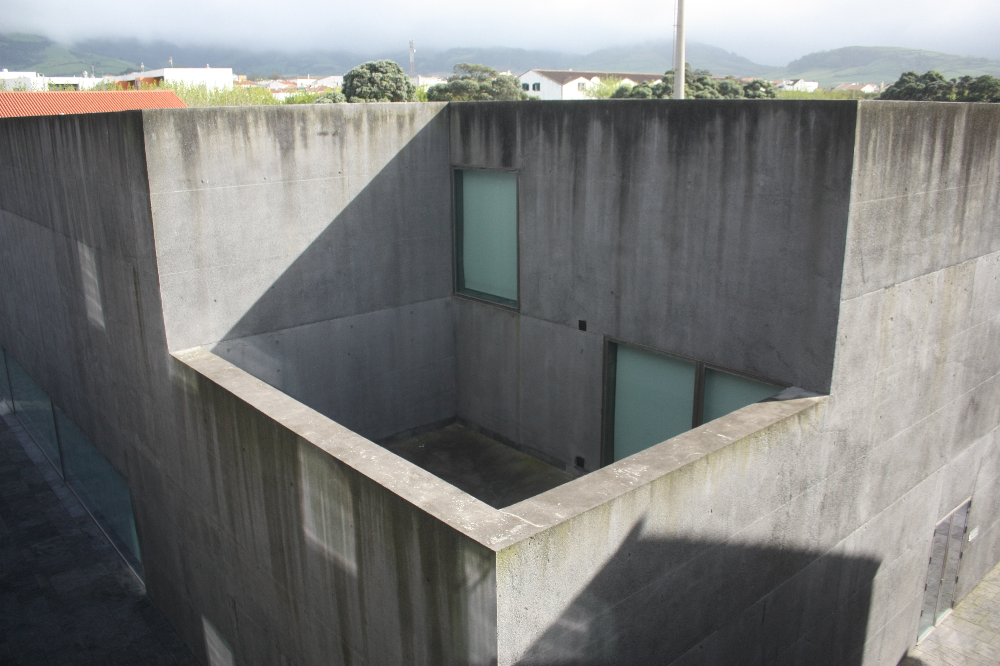
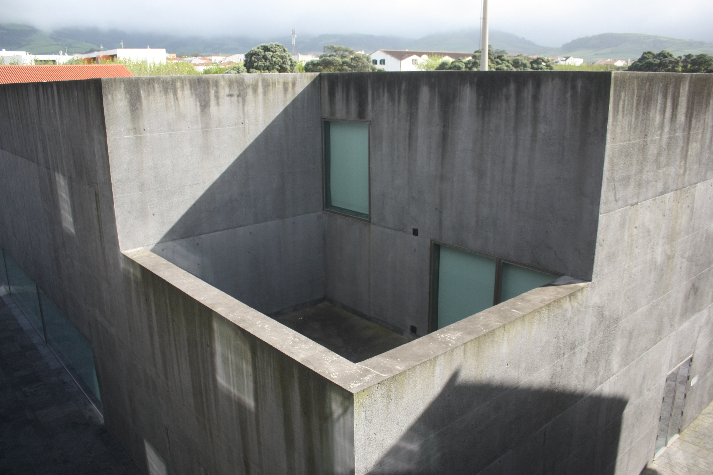

Fotografias
As fotos foram tiradas numa Canon EOS 450D, em modo manual, sem flash, com compensação de exposição a 0, e velocidade ISO em ISO-400.
Têm uma resolução de 4272×2848px, em formato JPG. Têm 72 pontos-por-polegada (dpi).
Todas as fotas exceto a primeira foram tiradas no Arquipélago – Centro de Artes Contemporâneas em Ribeira Grande.
Flores
A minha primeira foto foi tirada em Ponta Delgada, a 10 passos do apartamento onde vivo. Tinha acabado de requisitar a máquina e tirei dúzias de fotos a estas flores até perceber quais eram as definições adequadas, e até ter uma foto bonita.
| F-stop | Exposição | Distância Focal |
|---|---|---|
| f/5 | 1/250 sec | 42mm |
Estalagmites
Eu fui visitar o Centro de Artes Contemporâneas, á procura de bons cenários para fotografar.
A primeira porta à esquerda leva-nos a uma exposição chamada "Residências Artísticas", um espaço enorme com um teto muito alto.
Este espaço está totalmente vazio, exceto por estes polígonos que parecem erguer-se do chão como estalagmites.
| F-stop | Exposição | Distância Focal |
|---|---|---|
| f/3.5 | 1/80 sec | 18mm |
Fachada

Fora das "Residências Artísticas", andando sempre em frente, vemos este edificio. A porta para a receção está visivel, mas eu visitei no fim-de-semana e portanto não pude entrar.
| F-stop | Exposição | Distância Focal |
|---|---|---|
| f/3.5 | 1/4000 sec | 18mm |
Escadaria
Se percorrermos o perímetro do edíficio anterior podemos ver escadas até ao segundo andar. Esta é a vista, a partir do topo.
| F-stop | Exposição | Distância Focal |
|---|---|---|
| f/3.5 | 1/2500 sec | 18mm |
Traseiras

...Atrás do edíficio há um half-pipe para skate. E uma única palete. Eu achei esta vista interessante.
| F-stop | Exposição | Distância Focal |
|---|---|---|
| f/5.6 | 1/1600 sec | 55mm |
Extras
 

 

Análise/Enunciado
Foi-me entregue um enunciado para o projeto final da minha aula de Multimédia em IRM, que pede um portefólio:
Projeto: Criar um sítio Web que possa servir como portefólio, ou seja, onde sejam apresentados todos os trabalhos desenvolvidos, reflexo da evolução da aprendizagem, dos conhecimentos e das competências. Como, um dos componentes da disciplina, foi a FOTOGRAFIA, o trabalho desenvolvido nesta área deverá fazer parte do portefólio, com a apresentação das fotografias, as respetivas caraterísticas e a história, o enquadramento de cada uma delas.
Tenha em atenção as várias fases deste tipo de projeto:
- Análise e planeamento.
- Design.
- Produção.
- Teste e validação.
- Distribuição.
O projeto será disponibilizado na Web. Deverá ainda elaborar um guião que documente o conteúdo multimédia que vai desenvolver.
...
Portanto, preciso de criar um portefólio que inclua as fotos, e tenho de documentar o progresso, implementação, e design desse portefólio, e depois públicá-lo na Internet.
A ideia que tenho ao ler isto, quase imediatamente, é de combinar o guião/documentação com o portefólio: escrever como é que estou a fazer um site, o progresso e as ferramentas que uso, nesse mesmo site.
Design
Eu quero que o site seja responsivo, portanto adotei um design de coluna única. A página tem um <nav> com position: sticky no topo da página para navegar entre as diferentes secções.
Para a fonte, decidi usar Fira, por preferência própria.
Estou a usar uma palete de 4 cores na maioria do site:
/* Color variables */
--color-background: #251a27;
--color-primary: #bbddb8;
--color-secondary: #4a344e;
--color-highlight: #c0a929;
Para excertos de código estou a utilizar highlight.js com o tema Monokai.
Produção
HTML
Esta página está estruturada da seguinte forma:
<!DOCTYPE html>
<html lang="pt">
<head>(...)</head>
<body id="0">
<!-- A coluna que envolve a página -->
<div id="wrap">
<!-- Divisor adicional para assegurar que a página preenche -->
<!-- sempre o ecrã, utilizando min-height: 100vh -->
<div id="bulk">
<!-- O título no topo da página -->
<header>(...)</header>
<!-- Os links de navegação no topo do ecrã -->
<nav>(...)</nav>
<!-- Elemento semântico para o conteúdo do site -->
<main>
<section id="seccao">
<p>Texto</p>
<figure>
<img src="./img/imagem.png" alt="Imagem" width="150">
</figure>
<code class="highlight lang-bash">
code;
</code>
(...)
</section>
<hr class="sectionsplit">
<section>(...)</section>
<hr class="sectionsplit">
<section>(...)</section>
</main>
</div>
<!-- Footer com link para #0, sobe para o topo da página -->
<footer>(...)</footer>
</div>
</body>
</html>
Alguns comentários sobre partes desta estrutura:
<!DOCTYPE html>
<html lang="pt">
<head>(...)</head>
<body id="0">
Aqui tenho um body com id="0" para mais abaixo na página, no footer, ter um link para #0. Isto é uma maneira muito fácil de implementar um scroll-to-top.
<!-- A coluna que envolve a página -->
<div id="wrap">
<!-- Divisor adicional para assegurar que a página preenche -->
<!-- sempre o ecrã, utilizando min-height: 100vh -->
<div id="bulk">
Aqui, o #wrap molda a página numa coluna responsiva - experimente redimensionar a janela deste site.
Entretanto, o #bulk assegura que o conteúdo da página ocupa sempre 100% do ecrã antes do footer. Experimente eleminar tudo dentro do main para confirmar isto.
<!-- Os links de navegação no topo do ecrã -->
<nav>(...)</nav>
Este nav mantem-se no topo da página com position: sticky, e os links de navegação lá dentro levam o utilizador para a secção apropriado com um fragmento (#).
CSS
Eu acho que o meu ficheiro de CSS está comentado bem o suficiente e portanto não justifica analizar cerca de 200 linhas de código aqui. Alguns comentários, no entanto:
@import url("./normalize.css");
@import url("./fira.css");
Estes importes são, respetivamente, normalize.css, um ficheiro de estilos que "normaliza" muitas inconsistências entre browsers, e o ficheiro de estilos com as definições para a fonte Fira.
:root {
--page-width: 120ch;
/* Color variables */
--color-background: #251a27;
--color-primary: #bbddb8;
--color-secondary: #4a344e;
--color-highlight: #c0a929;
/* Font variables */
--font-masthead: "Fira Sans Heavy", sans-serif;
--font-main: "Fira Sans", sans-serif;
--font-heading: "Fira Sans Heavy", sans-serif;
--font-code: "Fira Mono", Courier, monospace;
/* Border width variable for nav and footer */
--border-width: 2px;
/* Scrollbar color.
* Unsure where this is supported other than ff≥64
*/
scrollbar-color: var(--color-secondary) var(--color-background);
}
Aqui :root é um pseudo-seletor de CSS que se refere ao elemento mais alto na cadeia - em HTML, isto é o elemento html, mas :root é mais específico que html.
O :root dá jeito para declarar variáveis de CSS, que é exatamente o que eu estou a fazer aqui. Experimente alterar estes valores com as devtools do seu browser.
/* Scrollbar color.
* Unsure where this is supported other than ff≥64
*/
scrollbar-color: var(--color-secondary) var(--color-background);
Aqui eu estou a utilizar uma propriedade com suporte parcial, que estará totalmente desenvolvida no futuro. Isto não quebra nada, simplesmente muda a cor da barra do browser se houver suporte para a propriedade.
Javascript
Estou a usar Javascript para pouco. Uma particularidade:
<!-- Code highlighting -->
<link rel="stylesheet" href="./assets/style/highlighting/a11y-dark.css">
<script src="./assets/script/highlight.pack.js" defer></script>
<!-- on-page-load javascript -->
<script src="./assets/script/index.js" defer></script>
Estou a usar o atributo defer para que o Javascript corra quando o resto da página acabar de carregar.
Estou a carregar o highlight.js primeiro, e depois executo o meu próprio script, onde ativo o highlight.js, que cria estes blocos de códigos com cores:
document.querySelectorAll("code.highlight")
.forEach(block => {
block.textContent = block.textContent.trim();
hljs.highlightBlock(block);
});
E este código prepara o botão de navegação que aparece quando o ecrã é pequeno o suficiente para necessitar da barra de navegação alternative:
document.querySelector("#navtoggle")
.addEventListener("click", () => {
document.querySelector("nav").classList.toggle("toggled");
});
Testes e validação
Fiz os possíveis para automatizar o processo de validação. O meu projeto vem com um pacote Node (package.json), que quando instalado tem scripts para validar os diferentes ficheiros. Estou a utilizar, por exemplo, o Nu Html Checker (v.Nu) para validar o HTML e CSS.
Para instalar o pacote (com Node já instalado) corre-se:
$ npm install
Depois, se corrermos npm run lint-task:validate, isso é o equivalente de correr isto:
$ java -jar ./node_modules/vnu-jar/build/dist/vnu.jar \
> --asciiquotes \
> --skip-non-html \
> --also-check-css \
> ./site/**
Estou também a usar HTMLHint, stylelint, e ESLint para validar e formatar o meu código HTML, CSS, e Javascript.
Estes pacotes também têm "lint-task"s:
$ npm run lint-task:htmlhint
$ # é o mesmo que:
$ htmlhint ./site
$
$ npm run lint-task:stylelint
$ # é o mesmo que:
$ stylelint ./site/assets/style --fix
$
$ npm run lint-task:eslint
$ # é o mesmo que:
$ eslint ./site/assets/script --fix
Também tenho um comando mais pequeno que corre todos estes comandos:
$ npm run lint
$ # é o mesmo que:
$ npm-run-all -s -c lint-task:*
Eu utilizo também o Editorconfig, que integra-se por extensão com o meu editor de código, o VS Code. O ESLint, HTMLHint, e stylelint também tem extensões que eu uso.
As definições de todos estes pacotes e extensões podem ser lidas na pasta base do projeto, nos seus correspondentes ficheiros .*rc.
Distribuição
Para a distribuição optei outra vez pelo mais simples: Puz o meu site no Github Pages, acessível aqui: equokka.github.io/folio-multimedia/site